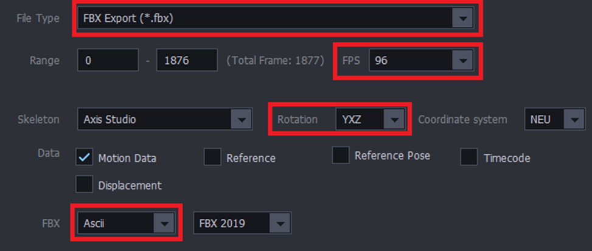
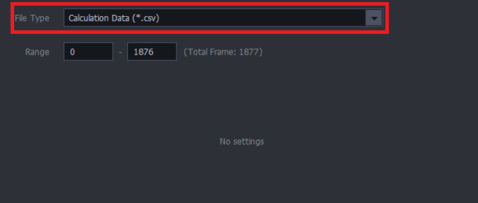
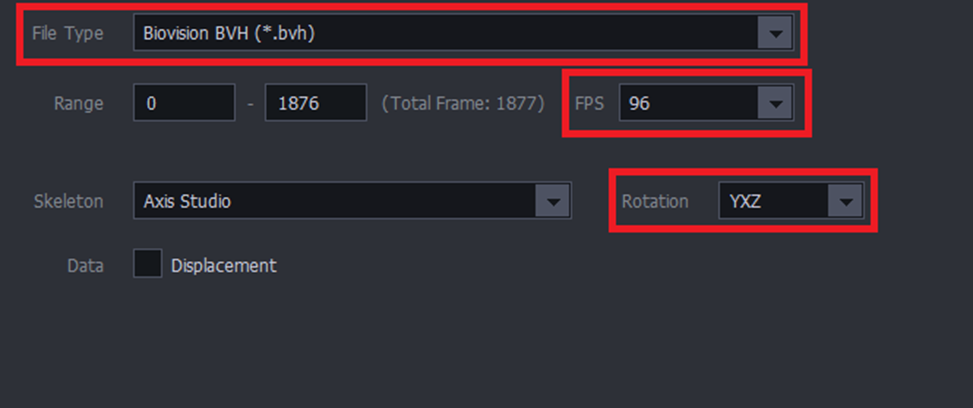
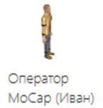
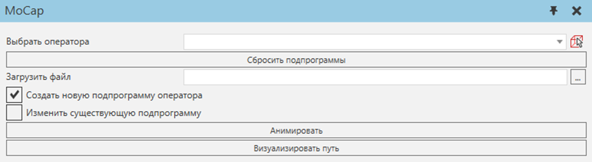
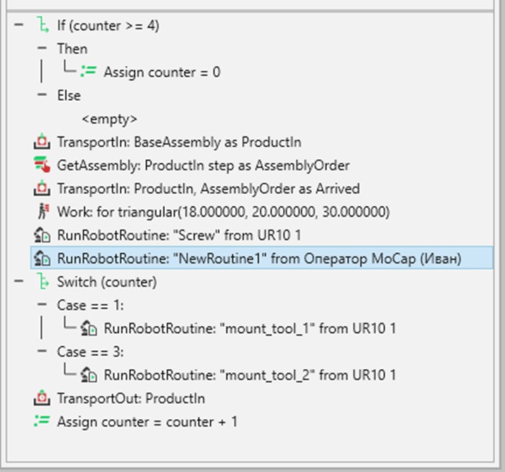
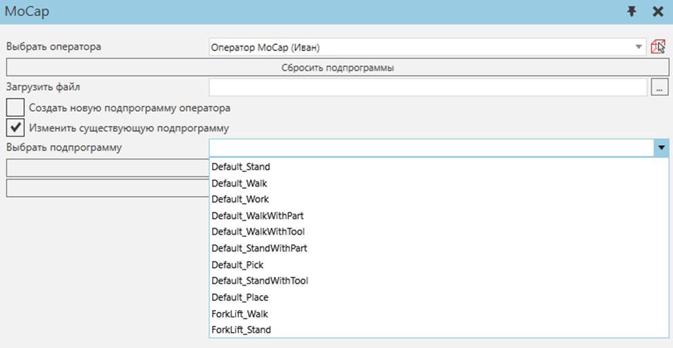
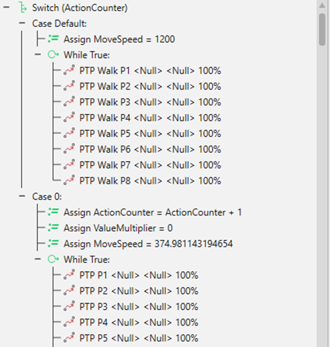
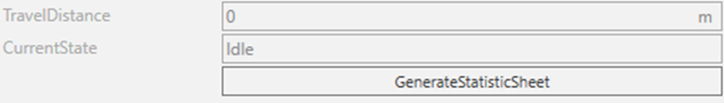
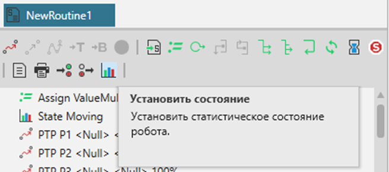

- Чтобы начать использовать аддон, в программе Axis Studio выберите интересующую вас анимацию. Экспортруйте ее в формате .csv (рис. 1 и рис. 2).

Рис. 1 – Нажмите на кнопку «Экспортировать»
- Поддерживаемые типы экспорта: FBX Export (*.fbx), Calculation Data (*.csv) и Biovision BVH (*.bvh). Важно учитывать настройки экспорта (рис. 2, рис. 3, рис. 4).

Рис. 2 – Экспорт типа FBX Export (*.fbx)

Рис. 3 – Экспорт типа Calculation Data (*.csv)

Рисунок 4 – Экспорт типа Biovision BVH (*.bvh)
Запустите ПО Рациональное производство.
- Для начала работы загрузите необходимую планировку.
- На планировке должен присутствовать компонент "Оператор MoCap (Имя)", который можно найти в электронном каталоге "МП MoCap" (рис. 5).

Рис. 5 – Оператор MoCap в электронном каталоге
- Во вкладке «Программирование» найдите раздел MoCap, выберите инструмент MoCap (рис. 6, рис. 7).

Рис. 6 – Новый раздел MoCap во вкладке «Программирование»

Рис. 7 – Внешний вид инструмента
- Далее необходимо выбрать оператора на планировке. Его можно выбрать с помощью выпадающего списка, или выбрать с планировки.
- Кнопка "Сбросить подпрограммы" выставляет подпрограммы оператора по умолчанию. Обратите внимание, что сначала необходимо выбрать оператора.
- Затем необходимо выбрать CSV файл, который представляет собой собранные данные с костюма захвата движения.
- Галочка "Создать новую подпрограмму оператора" помогает создать новую подпрограмму после нажатия кнопки "Анимировать". Данную подпрограмму можно вызывать в исполнителе процесса. Вызов подпрограммы, которая запускает анимацию человека происходит путем создания выражения "Выполнить Процедуру Робота". Необходимо правильно задать наименование программы обязательно в кавычках, а также выбрать компонент оператора, который будет выполнять действие (рис. 8). Для этого случая нет необходимости подключать оператора к транспортному контроллеру человека.

Рис. 8 – Пример исполнителя процесса
- Если убрать галочку "Создать новую подпрограмму оператора" и нажать кнопку "Анимировать", то программа загрузится в главную подпрограмму (Main) оператора и он будет воспроизводить анимацию сразу же после запуска симуляции. Для этого случая нет необходимости подключать оператора к транспортному контроллеру человека.
- Для того, чтобы поменять существующую анимацию оператора (например, ходьба или работа) существует галочка "Изменить существующую подпрограмму" и выпадающий список существующих подпрограмм (рис. 9). После нажатия кнопки "Анимировать", меняется выбранная подпрограмма. Если эта подпрограмма относится к базовым ("Default_*" или "ForkLift_*"), то анимация загружается в виде конструкции switch case (рис. 10). Оператор будет воспроизводить эту анимацию один раз после начала симуляции при определенном действии (например, ходьба или работа). Таким образом, есть возможность последовательно загрузить нужные анимации оператора, для симуляции реального производства. Рекомендуется разбивать каждое действие как отдельный этап и загружать анимации последовательно.

Рис. 9 – Выбор изменения существующей подпрограммы
- Если анимация была загружена в неправильном порядке, то есть возможность изменить порядок в конструкции case (начинается с 0) (рис. 10). Если вы загрузили последнюю анимацию человека и хотите, чтобы анимации воспроизводились заново в какой-то момент, то вам необходимо поменять выражение в последней анимации цикла с "Assign ActionCounter = ActionCounter + 1" на "Assign ActionCounter = 0" (рис. 10). Также учитывается реальная скорость оператора при снятии данных (общее пройденное расстояние / время записи данных) (рис. 10). Если нужно поменять базовый MoveSpeed оператора, то нужно сначала сбросить подпрограммы, найти Python скрипт "Моделирование" -> "Оператор MoCap"-> "Поведение" -> "MoveSpeedUpdate" и задать начальную скорость (по умолчанию start_speed = 1200) в скрипте и в "Свойства Компонента" оператора.

Рис. 10 – Загруженная анимация
- Существует возможность изменять загруженную анимацию. Анимация в подпрограмму оператора загружается путем создания движений от точки к точке (PTP) (рис. 10). Каждой секунде анимации соответствуют 24 движений. Лишние движения можно удалить. Чтобы замедлить или ускорить анимацию измените значение свойства "CycleTime" у PTP (чтобы изменить свойства нескольких выражений можно выделить их через комбинацию shift + лкм или ctrl + лкм), по умолчанию 0.041(6) секунд (0.0416666666666667).
- Подсчет расстояния, пройденного оператором происходит один раз в секунду. Чтобы малые движения человека не засчитывались в пройденное расстояние, у оператора существует свойство MoveThreshold. По умолчанию одно перемещение должно превышать 15 мм в 1/24 секунду (анимации соответсвуют 24 PTP), чтобы оно было засчитано и учтено в рассчете TravelDistance.
- Кнопка "Визуализировать путь" (рис. 7) запускает симуляцию, при сбросе симуляции строит диаграмму Спагетти выбранного оператора MoCap. Пройденный путь оператора рисуется в виде нового компонент - ломаной линии.
- Если посмотреть "Свойства Компонента" оператора, то внизу можно найти значение пройденного расстояния, а также текущее состояние человека (рис. 11). Чтобы точно передать состояния человека, целесообразно редактировать созданную подпрограмму (или Main) во вкладке "Программирование" путем создания оператора "Установить состояние" (рис. 12).

Рис. 11 – "Свойства Компонента" оператора MoCap

Рис. 12 – Оператор "Установить состояние"
- Кнопка "GenerateStatisticSheet" создает новую статистику для данного оператора, которую можно найти по пути "Главная"-"Статистика". Далее возможно редактировать и использовать статистику по вашему назначению.